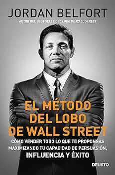

Don Quijote De La Mancha:En fe del buen acogimiento y honra que hace Vuestra Excelencia a toda suerte de libros, como príncipe tan inclinado a favorecer las buenas artes, mayormente las que por su nobleza no se abaten al servicio y granjerías del vulgo, he determinado de sacar a luz El ingenioso hidalgo don Quijote de la Mancha, al abrigo del clarísimo nombre de Vuestra Excelencia, a quien, con el acatamiento que debo a tanta grandeza, suplico le reciba agradablemente en su protección, para que a su sombra, aunque desnudo de aquel precioso ornamento de elegancia y erudición de que suelen andar vestidas las obras que se componen en las casas de los hombres que saben, ose parecer seguramente en el juicio de algunos que, conteniéndose en los límites de su ignorancia, suelen condenar con más rigor y menos justicia los trabajos ajenos; que, poniendo los ojos la prudencia de Vuestra Excelencia en mi buen deseo, fío que no desdeñará la cortedad de tan humilde servicio.
Intermezzo: A pesar de ser hermanos, Peter e Ivan Koubek tienen poco en común.
Peter, de treinta y pocos, es un carismático y renombrado abogado en Dublín de apariencia inquebrantable. Tras la muerte de su padre, lucha por mantener bajo control su caótica vida personal. Se medica para poder dormir y manejar la relación sentimental que mantiene con dos mujeres muy diferentes: su eterno primer amor...
El método del Lobo de Wall Street.Jordan Belfort es exbróker, conferenciante motivacional y ha trabajado como consultor para más de cincuenta empresas cotizadas. Ha escrito en cabeceras como The New York Times, The Wall Street Journal, Los Angeles Times, The Times, Forbes o Rolling Stone. Es autor del éxito mundial El lobo de Wall Street (Deusto, 2013), las memorias donde relata su vida de desenfreno y excesos y sus problemas con la justicia, que fueron llevadas a la gran pantalla por Martin Scorsese en la famosa película homónima protagonizada por Leonardo DiCaprio. En 2020, Deusto publicó también El método del lobo de Wall Street, donde Belfort comparte sus técnicas de persuasión e influencia para garantizar el éxito en los negocios. 